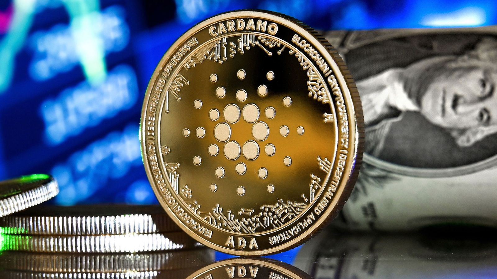

El desarrollo de Cardano ¿Quien es Charles Hoskinson?
El proyecto Cardano fue creado por el matemático y desarrollador de software Charles Hoskinson, que se hizo conocido inicialmente por ser el cofundador de Ethereum, otra plataforma blockchain.
Recientemente, dio a conocer a través de su canal de YouTube la perspectiva de la red Cardano y todas las novedades que llegarán en 2022.
A mediano plazo, Hoskinson adelantó que se podrá desarrollar protocolos de finanzas descentralizadas sobre Cardano, que servirán para generar retornos en dólares digitales y también obtener préstamos en criptomonedas.
Este cambio en la blockchain llegará recién a finales de 2022 y según adelantó Hoskinson, se podrán realizar transacciones de microfinanzas de extremo a extremo en Cardano.
Hoskinson, quien destacó que el mundo de las criptomonedas llegó para quedarse -y será “brillante”, graficó-, dice que el metaverso tiene el potencial de ser una de las áreas más grandes de este sector, ofreciendo a los usuarios una enorme categoría de productos
El concepto del metaverso se refiere a mundos virtuales donde los usuarios pueden hacer cualquier cosa, desde crear y jugar juegos, hasta poseer una propiedad, comprar y vender activos digitales, comerciar con criptomonedas o incluso criar animales digitales.
Pero, ¿qué es lo que a Hoskinson le gusta por fuera del universo cripto? Sin dudas todo aquello que sea una experiencia intrépida. Sin ir más lejos hace unos días estuvo en Egipto paseando en camello.
Hoskinson es además fanático de las aves y suele posar en las fotos con alguna al hombro. Con estilo cowboy, le gusta usar sombreros. Hoskinson los luce en el Cheyenne Frontier, un rodeo al aire libre que se lleva a cabo en Estados Unidos, que se celebra anualmente desde 1897 en Cheyenne, Wyoming.
Caracteristica de Cardano
Si quieres conocer las características de Cardano debes tener en cuenta que cuenta con varias capas que son una capa de transacciones utilizando su criptomoneda ADA, una capa de computación que es donde se ejecutan los Smart contracts.
Comprar Cardano puede ser una buena decisión hoy en día considerando que se trata de una plataforma en pleno crecimiento y que su moneda no ha dejado de subir en los últimos tiempos.
Se centra en varios hitos que son: la fundación Byron, descentralización Shelley, Smart contracts Goguein, escalabilidad Basho y gobierno Voltaire .
Cardano cuenta con muchas ventajas que la hacen una opción mucho mejor que otras monedas de las que hay hoy en día en el mercado del blockchain. De hecho, ha conseguido reducir las limitaciones que presentan monedas como Bitcoin o Ethereum.
Cardano tiene una gran comunidad alrededor que apoyan su moneda, así como los propios mercados. Se trata de una moneda que se lanzó en el año 2015. Se podría afirmar que en poco tiempo se ha convertido en la tercera moneda más grande del mundo por capitalización de mercado en criptomonedas.
El futuro de cardano
Se ha verificado que ha tenido un crecimiento exponencial de un 2.500 % y ha tenido una revalorización de un 280 %.
Según las previsiones los precios de Cardano seguirán subiendo con periodos de estabilización y puede alcanzar su valor máximo en este año 2022.
Se puede decir que Cardano es el primer proyecto de blockchain de tercera generación que además ha sido desarrollado con una vocación científica.
Precisamente, uno de los aspectos que más está influyendo en que Cardano se encuentre entre las monedas más importantes y en crecimiento es que han conseguido proporcionar un alto nivel de seguridad.
Se compara con el nivel de seguridad de Ethereum. De hecho, Ethereum es el objetivo que se plantea desbancar esta moneda que llega pisando fuerte. Se basa en un lenguaje de programación llamado Haskel que permite garantizar la inversión y facilita en gran medida el desarrollo de código más seguro y con más confianza.
Se trata, por tanto, de una criptomoneda que va a dar mucho que hablar y que seguirá demostrando que es una buena decisión de inversión si quieres estar al tanto de las novedades en el ámbito del blockchain y las criptomonedas, indicó CrowdEmprende.
